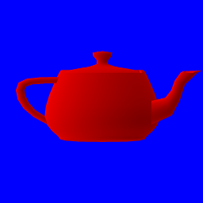

Gouraud shading
Let's continue with the teapot of the previous section:

Obviously there is something wrong with this image: we don't see any of the curves of the teapot except at its borders. This is not because the teapot is red, but because there is no lighting.
Lighting is a very complex topic and there are a lot of different techniques, but to get started we will use Gouraud shading which is very simple.
The theory
The idea behind gouraud shading is that if the direction of the light is perpendicular to an object's surface, then this surface should be bright. If the direction of the light is parallel to the surface, then the surface should be dark.

We are going to do this calculation one per fragment, in our fragment shader. The brightness of
each pixel will need to be equal to sin(angle(surface, light)). If the light is perpendicular,
the angle is pi/2 radians and the brightness is 1. If the light is parallel, the angle is 0
and the brightness is 0.
The question is: how do we know the angle between the surface and the light? This is where normals come into play.
As we saw in the previous section, the normal vector is the vector perpendicular to a surface at a given vertex. The normal of a vertex can only be calculated by knowing what the adjacent vertices are, therefore normals are usually calculated when you export a model from your 3D modeling software.

Since the normal is perpendicular to the surface of the object, we have to adjust the calculation.
If the light is parallel to the normal, then the surface should be bright. And if the light is
perpendicular to the normal, then the surface should be dark. Our formula is thus:
brightness = cos(angle(normal, light));
In practice
The main part of the calculation will be done in the fragment shader. However we need to modify the vertex shader first, in order to pass the normal's data to the fragment shader. In addition to this, we need to specify a newer version of GLSL, since v140 doesn't support the functions we're going to use. To make the vertex shader work, we need at least GLSL v150.
#version 150 // updated
in vec3 position;
in vec3 normal;
out vec3 v_normal; // new
uniform mat4 matrix;
void main() {
v_normal = transpose(inverse(mat3(matrix))) * normal; // new
gl_Position = matrix * vec4(position, 1.0);
}
We also need to multiply the normal by the matrix, but the transformations are a bit different and the calculation a bit weird. Since I didn't go into details about how matrices work, I won't go into details about why you have to use the transpose of the inverse (click for details).
If you recall the section about colors, the attributes that we pass from the vertex shader to the fragment shader are interpolated per fragment. This means that each fragment will get a different normal from the neighbouring fragments, and thus a different color.
Now let's take a look at our fragment shader:
#version 140
in vec3 v_normal;
out vec4 color;
uniform vec3 u_light;
void main() {
float brightness = dot(normalize(v_normal), normalize(u_light));
vec3 dark_color = vec3(0.6, 0.0, 0.0);
vec3 regular_color = vec3(1.0, 0.0, 0.0);
color = vec4(mix(dark_color, regular_color, brightness), 1.0);
}
In order to calculate the brightness of the fragment, we calculate the
dot product of v_normal and u_light once
normalized. This is a very efficient method that directly returns the cosine of the angle
between the two vectors, and it only requires three multiplications and three additions.
We then declare two colors: the color when the surface is entirely dark, and the color when the surface is entirely bright. In real life, it's not because an object is not exposed directly to a light source that it is black. Even unexposed surfaces receive some light from indirect sources. Therefore the dark color is not black but an intermediate level of red.
The mix function then interpolates between the dark and bright colors depending on the
brightness.
Don't forget to pass the new u_light uniform parameter when drawing:
# #![allow(unused_variables)] #fn main() { // the direction of the light let light = [-1.0, 0.4, 0.9f32]; target.draw((&positions, &normals), &indices, &program, &uniform! { matrix: matrix, u_light: light }, &Default::default()).unwrap(); #}
And here is the result:

Now that we have brightness we can see that there are more things that are wrong with our rendering, this will be covered in the next sections!